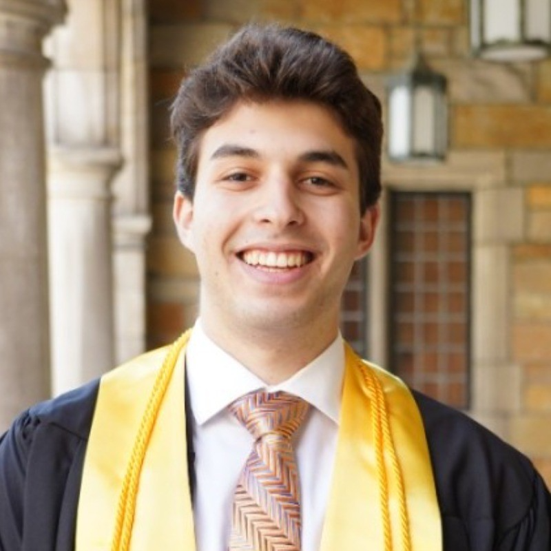
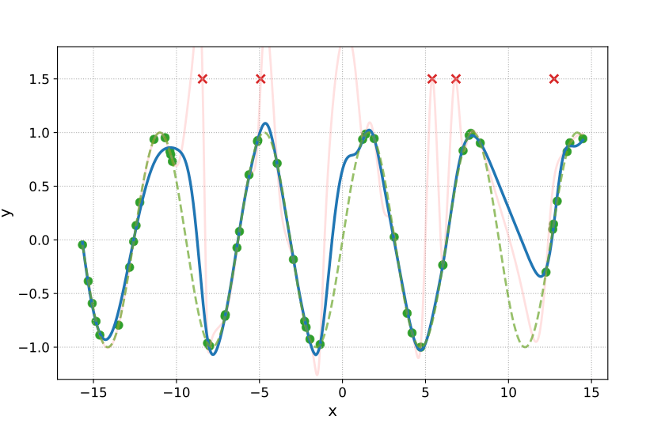

|
Jacob L. Block I am a Ph.D. Student in the Electrical and Computer Engineering Department at the University of Texas at Austin co-advised by Drs. Aryan Mokhtari and Sanjay Shakkottai . My current research focuses on efficient model fine-tuning and unlearning. I received my B.S.E in Electrical Engineering from the University of Michigan in 2023, where I was fortunate to work with Dr. Jeffrey Fessler . Email: jblock at utexas dot edu Resume / Google Scholar / Twitter / Github |
 |
{kind=link}
Experience
|
Research |

|
JLB, Mehryar Mohri, Aryan Mokhtari, and Sanjay Shakkottai (authors listed alphabetically) Preprint, 2026 PDF ArXiv We study machine unlearning for generative models by framing the task as a density ratio estimation to a target distribution representing the retained information. While classifier guidance is a standard approach for density ratio estimation, we show it can fail to unlearn with finite samples when the forget set represents a concentrated data distribution. To address this, we introduce Temper-Then-Tilt Unlearning (T3-Unlearning), which tempers the frozen the base distribution to flatten high-confidence spikes before tilting with a lightweight classifier trained to distinguish retain from forget samples. Theoretical analysis shows finite-sample guarantees linking the classifier risk to unlearning error, proving that tempering is necessary to unlearn for concentrated distributions. Experiments on the TOFU benchmark show that T3-Unlearning improves over existing baselines, while training only a fraction of the parameters with a minimal runtime. |
|
 |
JLB, Aryan Mokhtari, and Sanjay Shakkottai NeurIPS, 2025 PDF ArXiv Code We study machine unlearning in the overparameterized regime, where many different models can interpolate the training data. We propose a new unlearning definition based on the minimum-complexity interpolator over the retained data, and introduce MinNorm-OG, an algorithm enforcing this principle using only model gradients at the original solution. We provide theoretical guarantees for several model classes and demonstrate that MinNorm-OG outperforms existing baselines in practice. |

|
JLB, Sundararajan Srinivasan, Liam Collins, Aryan Mokhtari, and Sanjay Shakkottai NeurIPS, 2025 PDF ArXiv Code Foundation models learn rich representations, but require further training for adaptation to downstream tasks. We introduce a generic PEFT-based meta-learning framework that prepares models to adapt efficiently to unseen tasks, and show that for linear models with LoRA, standard retraining is provably suboptimal while our method achieves strict performance guarantees. Experiments on synthetic, vision, and language tasks confirm significant gains over conventional retraining. |